Enquire about this work
← Prev
Next →
I like to paint over the underpaint
Lately
I am working on a new series and learning to play the ukulele for my daughter.
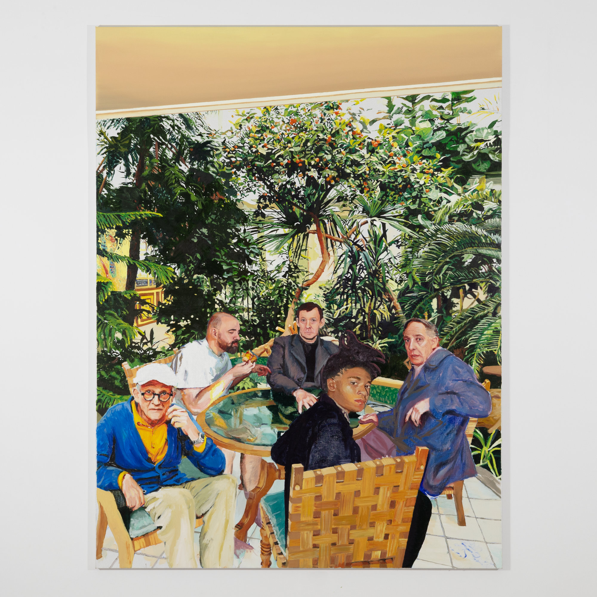
Got My P Pass, 2026, oil on linen, 200 x 150 cm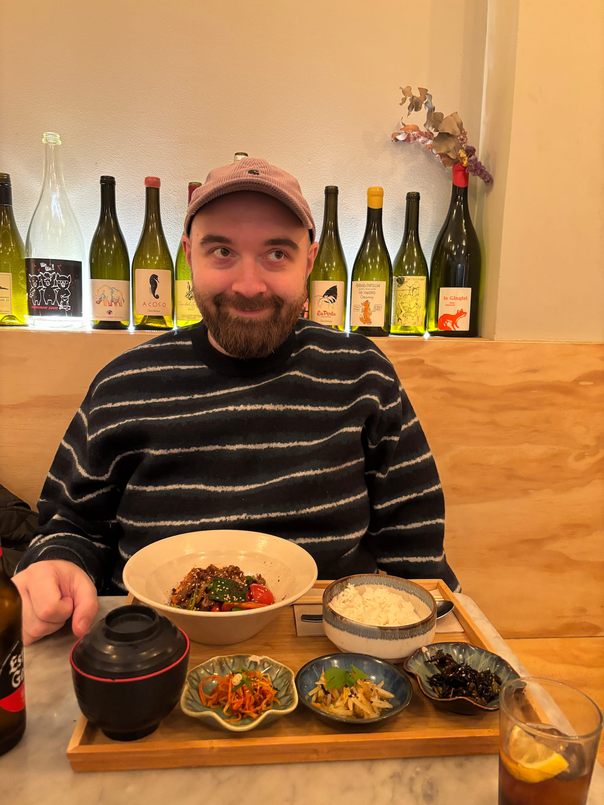
b. 1993 in Romania · Lives and works in Romania
Adrian Cojocaru paints what he needs to see. Working from a personal archive built through years of walking, he moves between art history and the textures of daily life — absorbing, recombining, pushing existing imagery somewhere it hasn't been yet. Raised between Eastern and Western Europe, he brings a double perspective to the canvas: playful and deliberate, familiar and displaced. His paintings attend to what repetition, labor, and the unremarkable corners of experience can hold.
He has exhibited at MARe Museum of Recent Art, Bucharest, and the Museum of Art Brașov, and presented a solo exhibition at GAEP Gallery, Bucharest, in 2024.
CV
Education
Awards
Solo exhibitions
Selected group exhibitions
Press | Publications
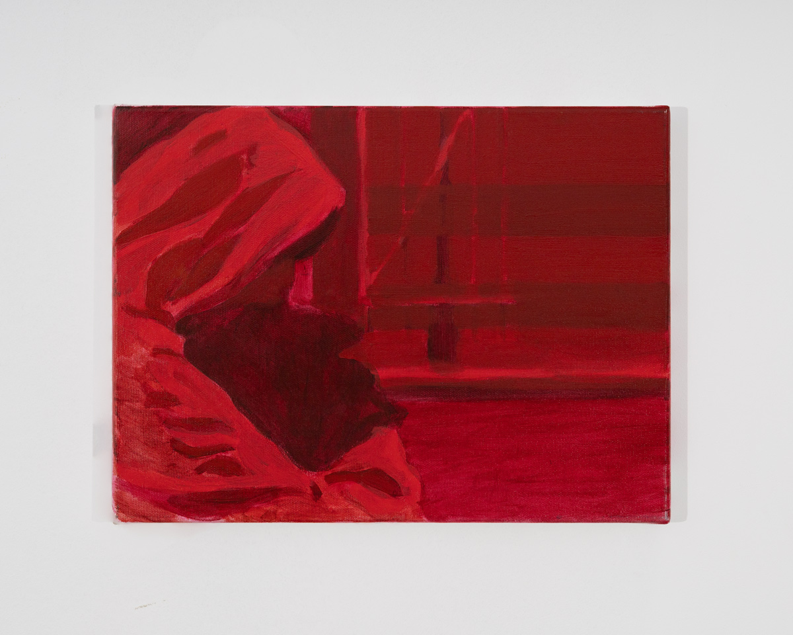
2026
RE: HISTORY – Exhibition
I am really excited to show this artwork in a group exhibition organized by Open Art Network and curated by Tiana Schmidts in a really interesting place: Rupea Fortress. Exhibition period: 6–30 August 2026. Opening: 6 August, 17:00. There is an extended program on 6-9 August, check the detailed agenda on Open Art Network instagram page.
Project page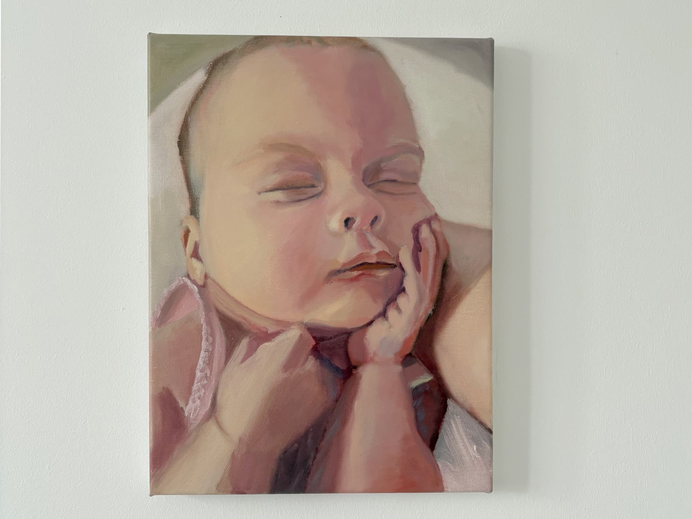
2025
Birth of my daughter
This year I'm fully dedicated to taking care of my family 🍼
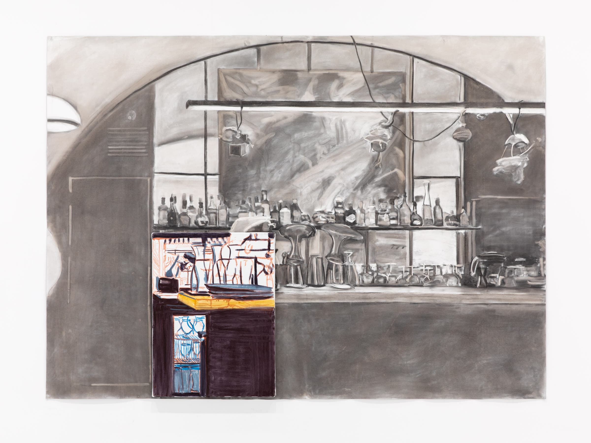
2024
INTERVIU – Adrian Cojocaru și practica artistică precum o bucătărie profesională
Artistul Adrian Cojocaru vorbește într-un interviu acordat curatorial.ro despre cel mai amplu proiect artistic al său care se află în prim-plan la galeria bucureșteană Gaep. Pornind de la experiențele culinare, ca gurmand și lucrător în bucătărie, el a creat un proiect artistic și expozițional asemănător unui tasting menu dintr-un restaurant fine dining.
Read the article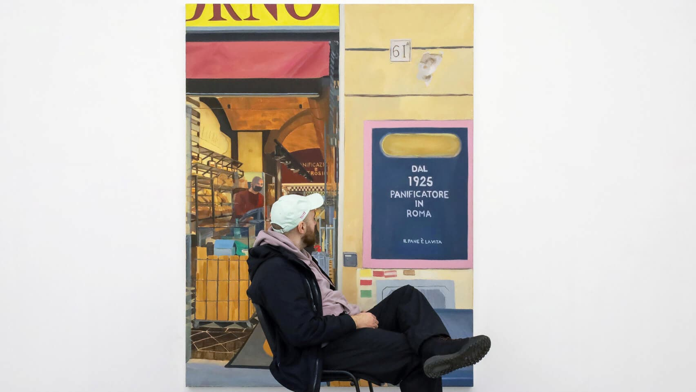
2024
“GAEP PRESENTS” | 5 RAPID FIRE QUESTIONS FOR ADRIAN COJOCARU
Ahead of the opening on July 19, we sat down with the artist for a quick look at the intersection of food and art in his own life. What snack food we would definitely find in your studio? I have water in my studio and a “secret” stash of dark chocolate hidden in different places. I tend to forget the exact places, because I like the adrenaline of a quest combined with hypoglycemia.
Read the interview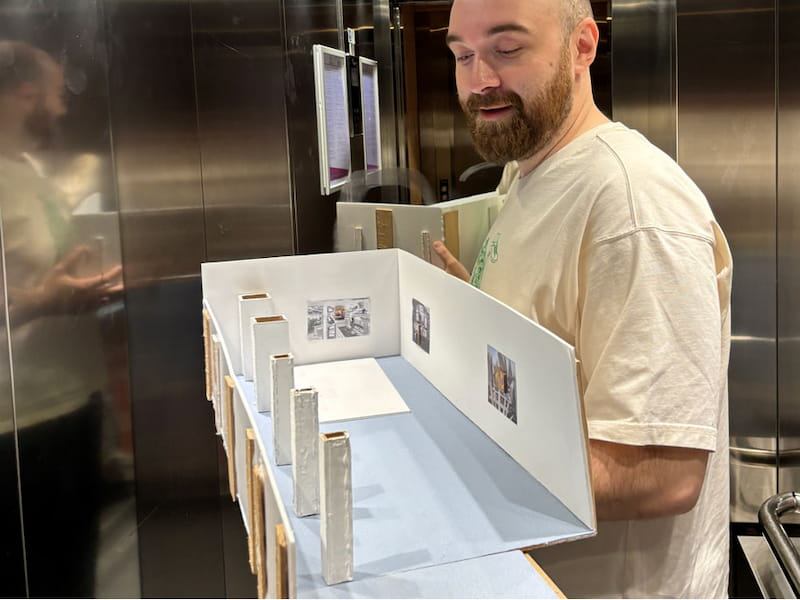
2024
Acts of In-Between (Solo Show)
GAEP Gallery, Bucharest, Romania
19 July - 16 August 2024
I am pleased to announce my first solo exhibition with GAEP in Bucharest. I will showcase a new body of work that I have been developing over the past year and a half, inspired by extensive research conducted in professional kitchens. This series embodies my commitment to artistic investigation, offering an immersive look into culinary environments and exploring the intersection between art and culinary experiences. I look forward to welcoming you on for the reception on Friday, 19 July | 6:00 – 10:00 PM, 8 Giuseppe Garibaldi Street, Bucharest.
PS: we'll be serving ice cream to keep things cool 🍧
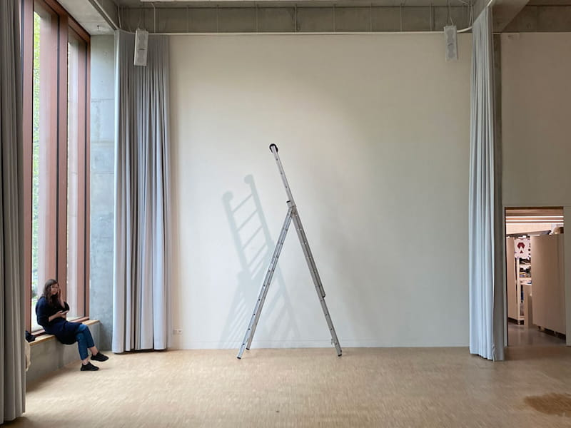
2024
On the Threshold of Dreams (Group Show)
MAD-Gallery / PXL-MAD School, Hasselt, Belgium 13 - 17 May 2024 I will be presenting an artwork from a new series at the exhibition On the Threshold of Dreams, curated by Patrick Vanden Eynde, at the MAD-Gallery in Hasselt, Belgium. Join us for the opening on Thursday, 16 May, at 6 PM.
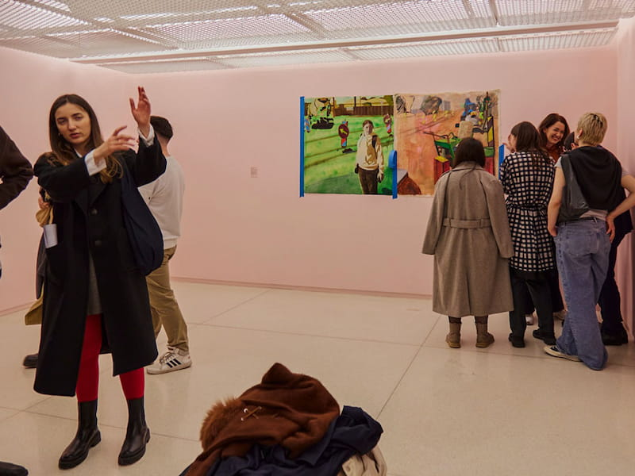
2024
Graduate Curated (Group Show)
MARe - Museum of Recent Art, Bucharest, Romania 9 February 2024 - 20 May 2024 'Cei Noi / Graduate Curated is also a first for MARe/Museum of Recent Art, which, in its first five years since its founding, systematically showcased dozens upon dozens of established names in post-war Romanian art. Previous thematic exhibitions, covering topics significant to visual culture and national history (ranging from the image of the feminine ideal to the representation of sports, the city, or agriculture in Romanian art), never considered generational criteria.' Excerpt from the press release
Read the press release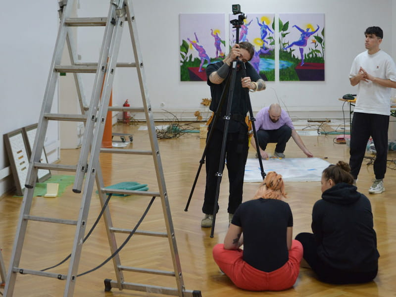
2023
Interview for IqAds
I have talked with Elena Dobre about the process behind creating the artwork presented in the Accelerator Mentorat exhibition. The interview is here, in romanian.
Read the interview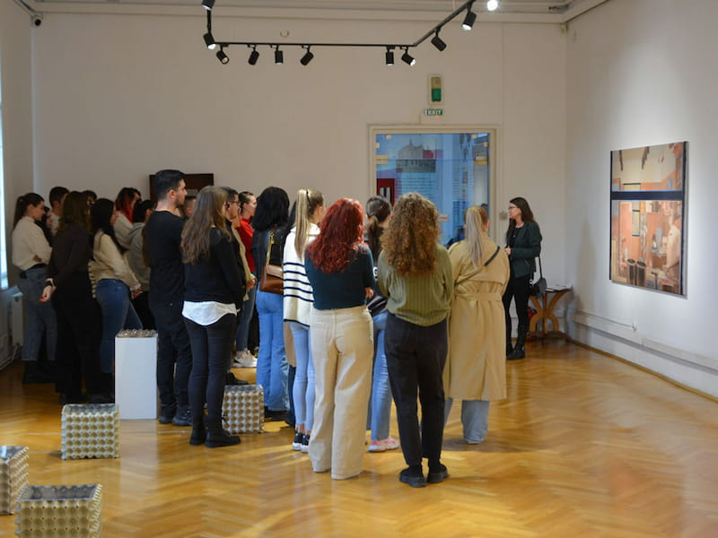
2023
Fabulating About a Gelato Machine (Group Show)
The Art Museum Brasov, Romania 10 November 2023 - 3 March 2024 'We started the exhibition by keeping in mind the book Slices of Life by Elia Romanelli, Piero Vereni, and Ottavia Castellina. All the exhibiting artists described a personal preference or a detail of their lives that had an impact on their artistic practice, either in its development or in the choice of the studied subjects. The works vary from a statistical viewpoint on living to a particular understanding of life and how one is perceived.' Excerpt from the Fabulating About a Gelato Machine exhibition text, written by Georgia Tidorescu
Read the exhibition text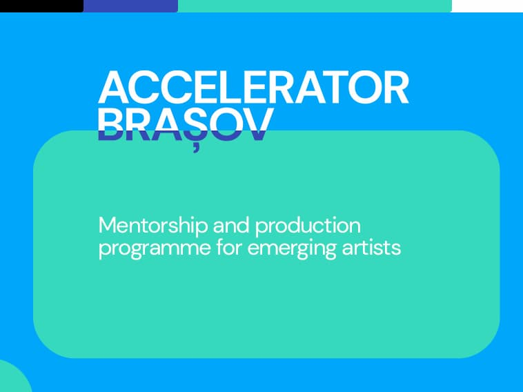
2023
Interview with the Accelerator team
Describe yourself briefly: what do you like, what moves you, what angers you? I enjoy buying new books and reading them. I like listening to the radio in the morning while having my coffee in the studio. I like playing tennis with friends. I am moved by decent people and their stories. Poorly cooked food angers me.
Read the interview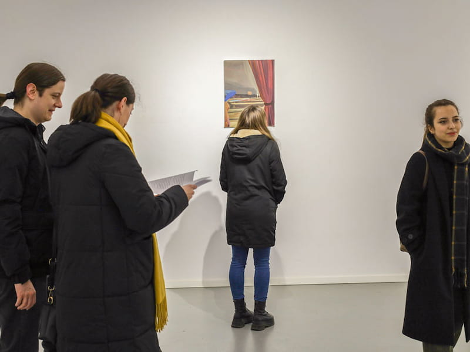
2022
Il Pane è la Vita (Solo Show)
Aparte Gallery, Iasi, Romania 16 December 2022 - 5 January 2023 La cosa che mi piace di più nella vita è il mangiare. Con queste scene voglio far vedere che esistono luoghi speciali per i misfits che vivono per il cibo.
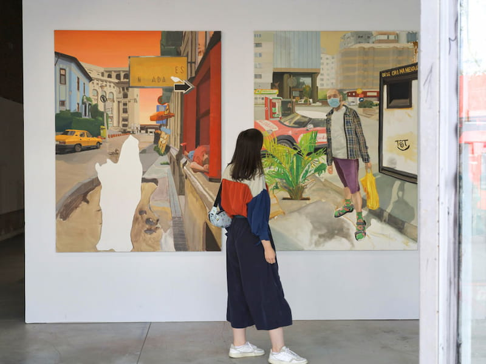
2022
DIPLOMA SHOW 2022 (Group Show)
Combinatul Fondului Plastic, Bucharest, Romania 7 - 16 October 2022 The paintings that compose this artistic project represent imaginary scenes generated by my urban wanderings. The proposed universe supports alternative scenarios projected by the artist on the idea of the city as a palimpsestic entity and invites endless participatory commentary.
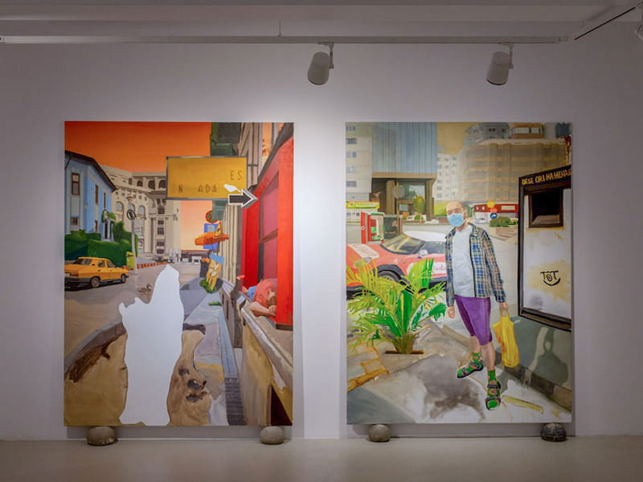
2022
Graduation Highlights 2022 (Group Show)
Borderline Art Space, Iasi, Romania 14 July - 25 August 2022 'Adrian Cojocaru, a painting graduate under the guidance of Prof. Dr. Mihai Tarași, has depicted individuals and places that captured his attention during his wanderings. Personal experiences, a keen sense of observation, and the artist's imagination are the tools that forge urban landscapes brought together in this project.' Ioana Soreanu, Radio Romania Iasi
Leave a mark.
Draw something. It won't be there next time.
Tools
Pencil · Liner · Charcoal · Brush · Eraser
Curated drawings
Selected marks — mine and sometimes from friends — live here.
View the gallery →Research map
An atlas of influences — artists, books, places, ideas.
Explore the map →Drawing resets on each visit. Nothing is saved — only the gesture remains.